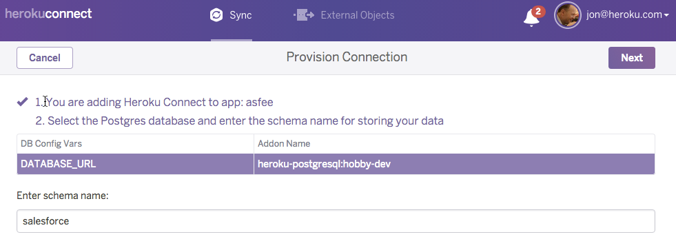
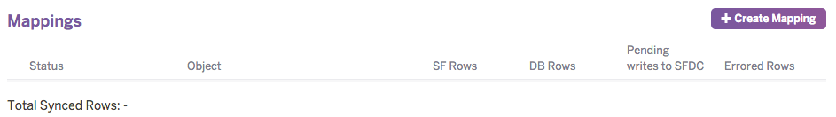
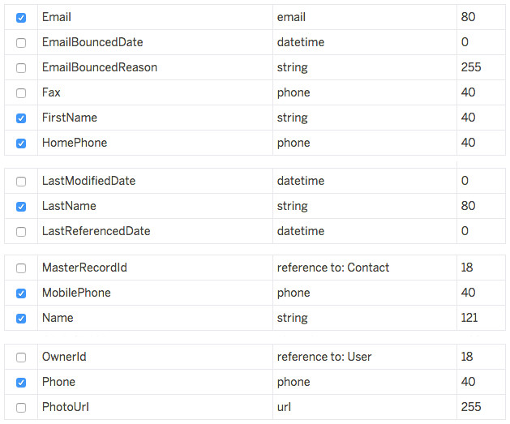
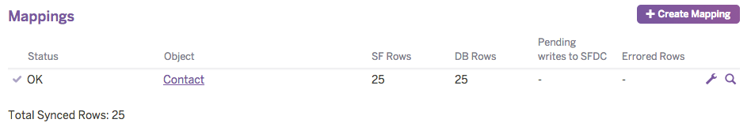

Your application has been deployed! Additional setup is need for this app to work.
Step 1) Setup a Salesforce Developer Organization
To get a development environment on Salesforce, signup for a new Salesforce Developer Organization.
After you have verified your email and logged into Salesforce, find the contact in the system named Tim Barr.
Step 2) Provision the Heroku Postgres Add-on
Now you are going to deploy an add-on. Heroku Add-ons are cloud services — such as databases, monitoring services, caching services and queuing systems — which can be instantly provisioned for an application.
In this step, you will provision a relational database by adding the Heroku Postgres add-on.
- Visit the Heroku Dashboard and locate your application.
- Click on the Resources tab.
- In the search area within the Add-ons section, type Heroku Postgres, click Enter, and then click Provision.
The simplicity and speed of this hides the complexity of what you should did. With just a few clicks, you provisioned one of 150 add-on services, in this case a relational database. The service is fully managed, is already running, and is now connected to your application.
Heroku typically connects a provisioned add-on to an application by setting a configuration variable - available as a runtime environment variable within the application.
- In the Dashboard, select your application, and then click on the Settings tab.
- In the Config Variables section, click Reveal Config Vars - you will notice the
DATABASE_URLis now set.
Step 3) Provision the Heroku Connect Add-on
Applications running on Heroku can use a number of different methods to integrate with Salesforce data including the Salesforce REST APIs. An easier approach is to use the Heroku Connect add-on.
Heroku Connect provides bi-directional synchronization between Salesforce and Heroku Postgres, allowing you to unify and share the data in a Heroku Postgres SQL database with the contacts, accounts and other custom objects in a Salesforce database.
In this section you will provision the Heroku Connect add-on, and sync your Salesforce Contacts to the Heroku Postgres database provisioned in the previous step.
- Visit the Heroku Dashboard and locate your application.
- Click on the Resources tab.
- In search area within the Add-ons section, type Heroku Connect, click Enter, and then click Provision.
- Click on the newly added Heroku Connect add-on to configure the syncing, and click Begin Setup.
The Heroku Connect Provision Connection screen will appear:

Heroku Connect automatically locates the Heroku Postgres database that you provisioned in the previous step.
- Click Next and then Authorize
Now set up Heroku Connect:
- Authorize Heroku Connect to access your Salesforce Org, logging into Salesforce if asked to:

- Create a mappings between the Contact object in Salesforce, and a table in the Heroku Postgres database.
- Click Create Mapping. 
- Select the Contact object
- In the Database Salesforce section, check the "Write to Salesforce any updates to your database" option.
- In the Mapped Fields section, check the Email, FirstName, HomePhone, LastName, MobilePhone, Name, and Phone fields.
 - Click Save
- Once you've completed the mapping setup the data will begin synchronizing 
Your application, via Heroku Connect, is now syncing (bi-directionally) a subset of the Contact object in Salesforce with a new table in the Heroku Postgres database associated with your app.
Step 4) Test Your App
Open the Phone Number Changer page and for the First Name, Last Name, and Email fields enter Tim, Barr, and barr_tim@grandhotels.com while also specifying a phone number for Phone. Then select Update Phone Number and verify that the contact record's phone number in Salesforce was updated.